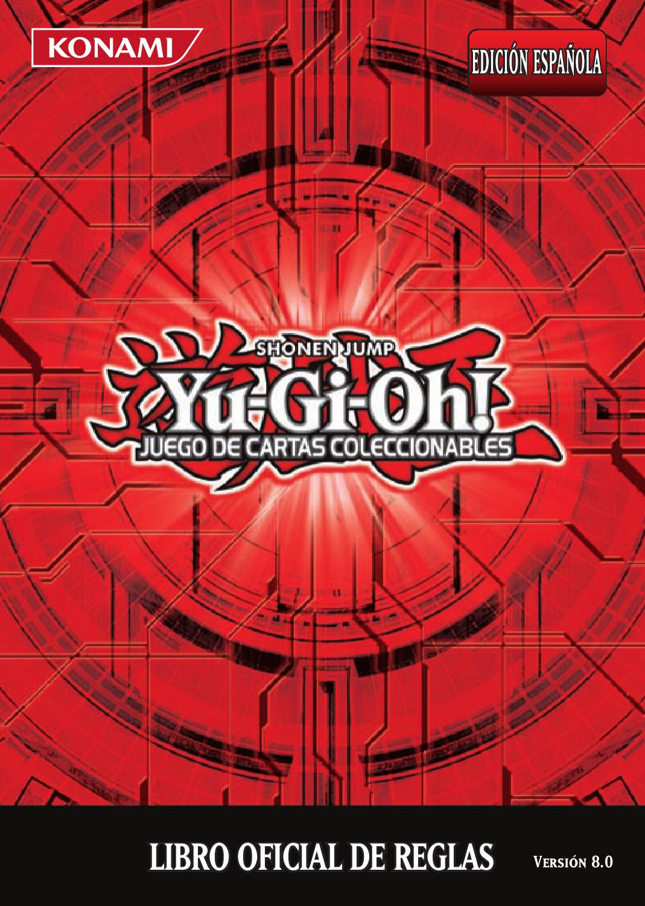

El Trading Card Game de YuGiOh
¿Qué es el TCG?
Yu-Gi-Oh! Juego de Cartas Coleccionables (también conocido con su nombre en inglés como Yu-Gi-Oh! Trading Card Game y usualmente con la abreviatura TCG, adaptada al español como JCC) es el juego de cartas basado en el fenómeno manga y anime de Yu-Gi-Oh!, siendo este producido por Konami como su dueño actual. Acorde con el "Libro de los Récord Guinness" es el juego de cartas más vendido de todos los tiempos, sobrepasando las 22.000 millones de cartas vendidas desde agosto del 2009. Posiblemente el aspecto más lucrativo de esta franquicia, el TCG es jugado en todo el mundo, pero mayormente en Norte América, Europa y Australia.
¿En qué consiste?
En este juego, dos o más personas (llamadas Duelistas) se enfrentan en un Duelo de Monstruos. En este cada jugador cuenta con un determinado número de cartas de tres diferentes clases: Cartas de Monstruo, Cartas Mágicas y Cartas de Trampa. Cada una tiene características y efectos diferentes (algunas pocas no tienen efecto) que se usan durante el Duelo con el fin de defenderse y derrotar a su adversario. Cada jugador cuenta con 8000 LP (Life Points o Puntos de Vida) y quien queda con 0 LP, o se queda sin cartas, pierde el Duelo.
Aspectos Básicos
Deck/Mazo
El Deck (también conocido como "baraja" en lanzamientos del JCC y "mazo" en videojuegos) es el conjunto de cartas. Es parte esencial del juego, ya que este contiene todas las Cartas Mágicas, Cartas de Trampa y la gran mayoría de Cartas de Monstruo exceptuando los Monstruos de Fusión, Monstruos de Sincronía y Monstruos XYZ (cartas que en cambio se sitúan en un Deck apartado llamado Deck Extra).
Este cuenta con ciertas limitaciones, por ejemplo; dependiendo el modo de juego, solo se podrán llevar cierta cantidad de cartas. En el formato normal, cada jugador puede llevar de 40 a 60 cartas. Es importante recordar que la cantidad de cartas también es parte de la estrategia que uno desee utilizar.
Cartas
Una carta, obviamente, constituye un elemento fundamental para el juego de cartas. Representa un Monstruo, una Magia o una Trampa con las cuales se lleva a cabo un Duelo. Sólo pueden llevarse tres copias de la misma carta; aunque estas tengan ilustraciones diferentes, mientras compartan nombre, no se podrán utilizar más de 3. Algunas cartas tienen restricción, lo que limita la cantidad de cartas iguales que un jugador puede poseer: dos, una o ninguna (prohibidas e ilegales). La lista cambia periódicamente.
Veamos los tipos de Cartas que hay presentes en el juego:
Tipos de Cartas
Cartas de Monstruo: Suelen ser de color naranja. Representan a los monstruos que un jugador puede Invocar y hacer batallar contra otros o directamente contra su adversario, cada carta de monstruo cuenta con una estadística de ATK (ataque) y DEF (defensa) que determina si ganará o no un enfrentamiento contra un monstruo rival.
Cartas de Magia: Son de color verde y pueden tener varios efectos que alteran un Duelo. Suelen tener efectos que benefician al controlador de la carta, o perjudican al adversario. Puedes usar tantas Cartas Mágicas como quieras por turno. En un Deck común, las cartas mágicas ocupan una parte muy pequeña del total, menos de la mitad (entre 12 y 15 cartas). En conjunto con las Cartas de Trampa suelen formar la mitad del Deck Principal.
Cartas de Trampa: Son cartas de color púrpura que tienen varios efectos para hacerle difícil las cosas a tu adversario o más fáciles para ti durante un Duelo. Estas deben ser colocadas boca abajo en la Zona de Magia y Trampas (véase Cómo Jugar) y generalmente, solo pueden ser activadas después de que el turno donde fueron colocadas haya terminado.
¿Cómo Jugar Yu-Gi-Oh?
En un juego tan complejo y tan antiguo (aproximadamente 22 años) como lo es el TCG de Yu-Gi-Oh!, aprender a jugar puede parecer difícil. Pero Konami nos ha facilitado la tarea con sitios web orientados a princpiantes, como el sitio oficial de YuGiOh para principiantes y entregándonos un libro de reglas bastante competente y completo. Si quieres leer el reglamento haz click aquí o en la imagen de la derecha.
Sobre el Reglamento
El reglamento de juego de cartas Yu-Gi-Oh! son una serie de reglas que se deben seguir durante el juego contra uno o más adversarios, y la estructura y creación de un Deck de cartas para jugar.
Las Reglas Básicas del Reglamento rigen el juego y se cumplen siempre y cuando el efecto de una Carta Mágica, Monstruo de efecto o Carta de trampa no diga lo contrario.
En el caso de que el efecto de una carta entre en conflicto con alguna regla, el propio Reglamento dicta que el efecto de la carta tiene prioridad. El Yu-Gi-Oh! Trading Card Game es un juego muy dinámico y gran parte de su éxito se debe a esa cualidad, en la que existen efectos para "romper" sus propias reglas en beneficio del jugador.
